اقامتگاه دِتَر تقدیم میکند
راهنمای جاذبههای گردشگری، طبیعت و دیدنیهای منطقه الموت
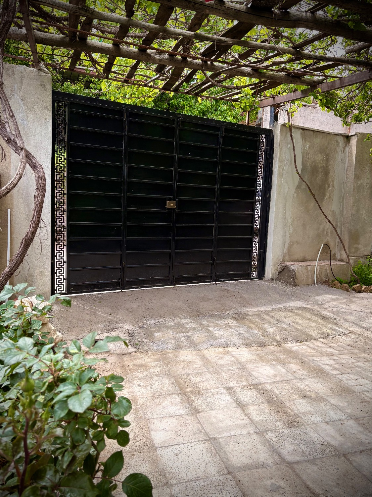
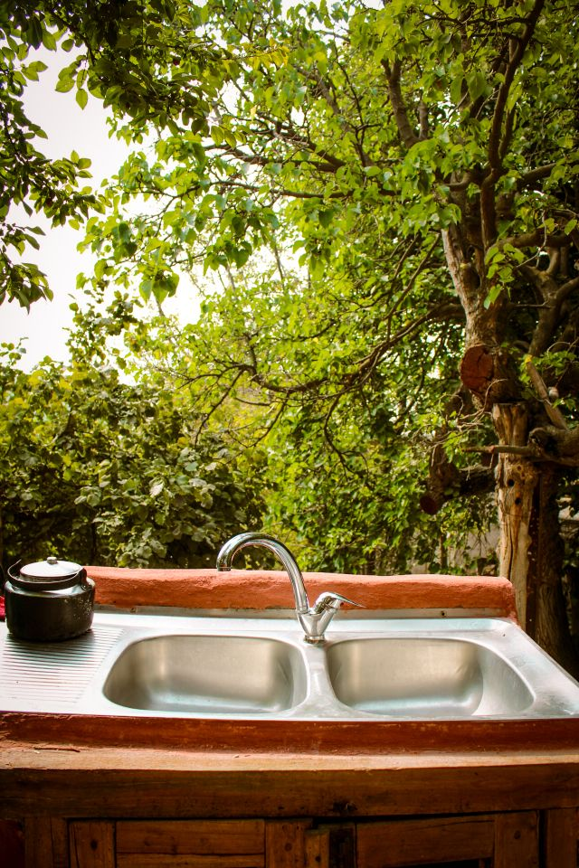
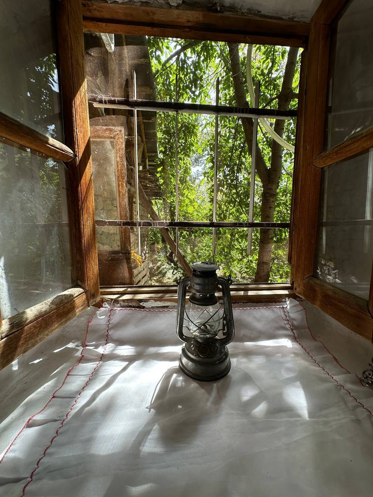
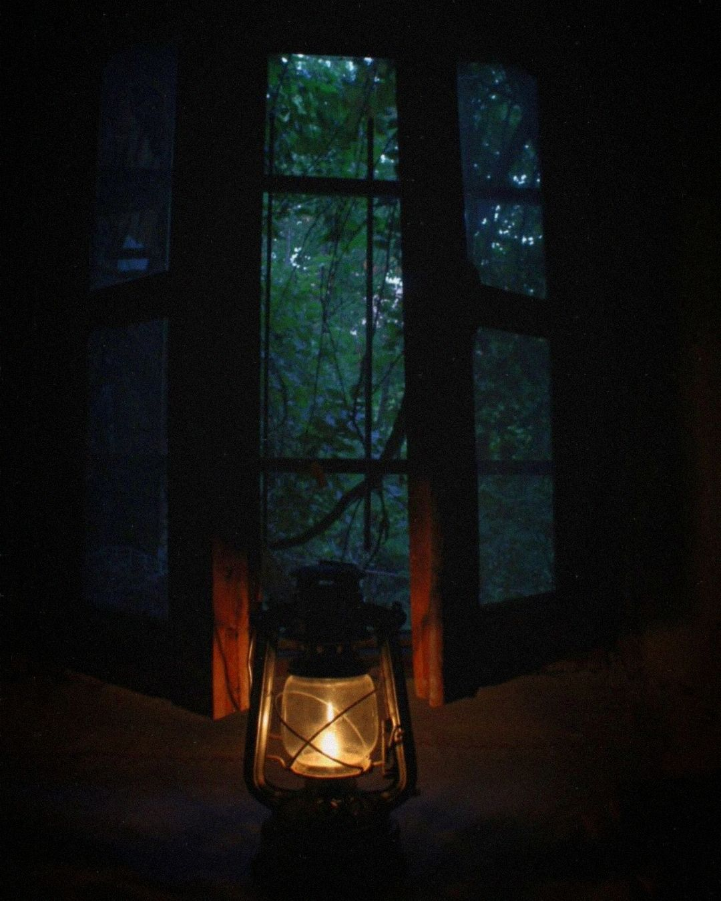
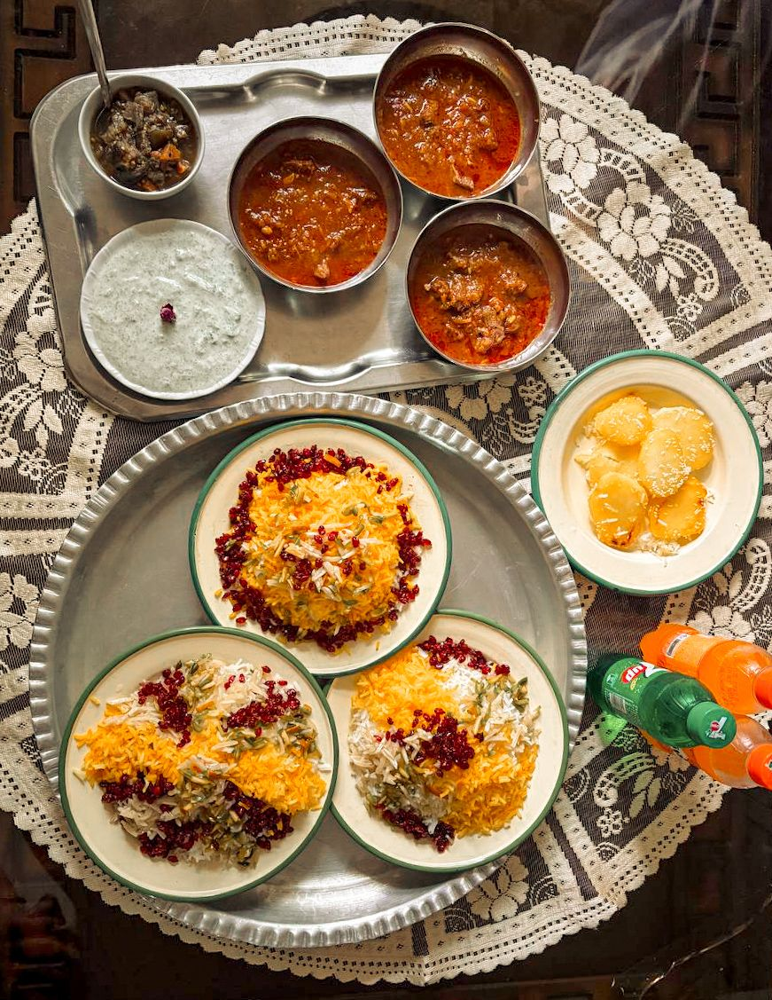
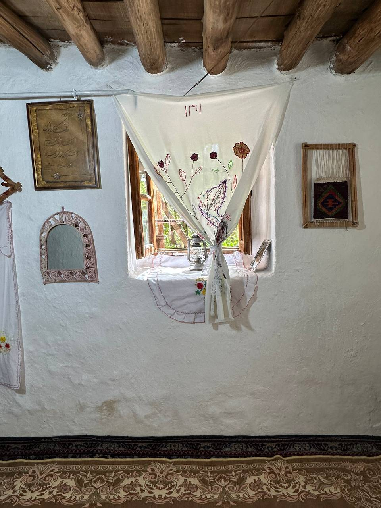
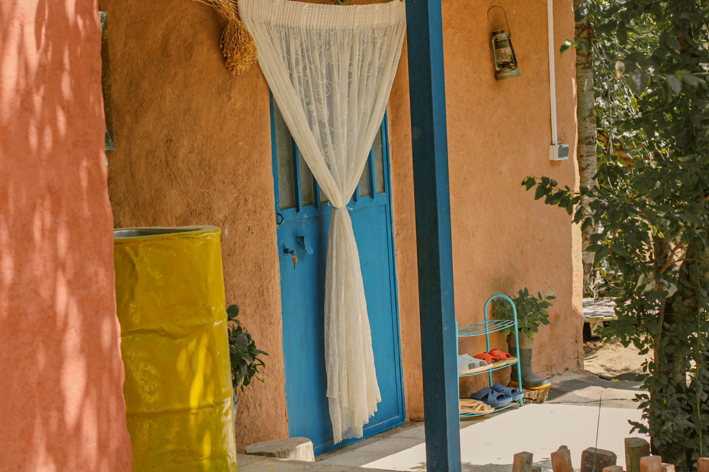
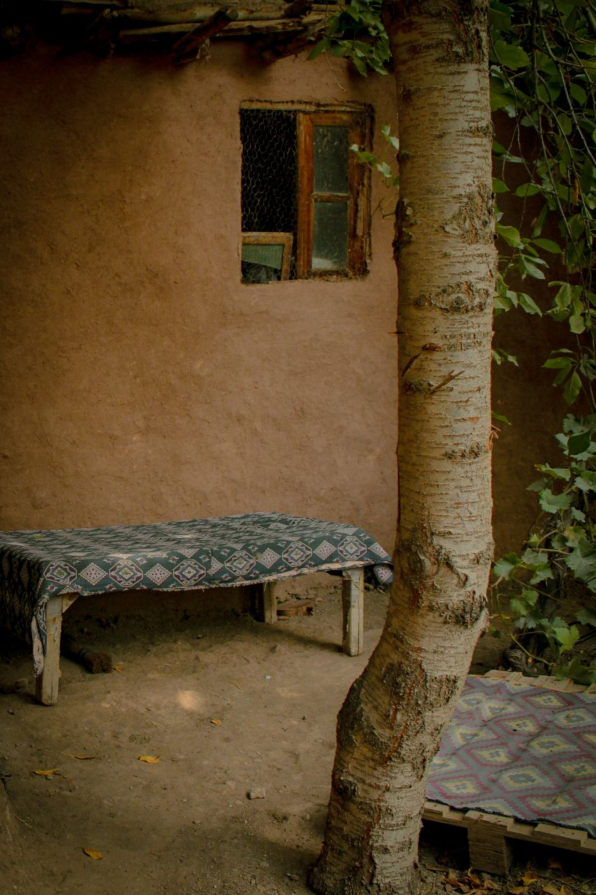
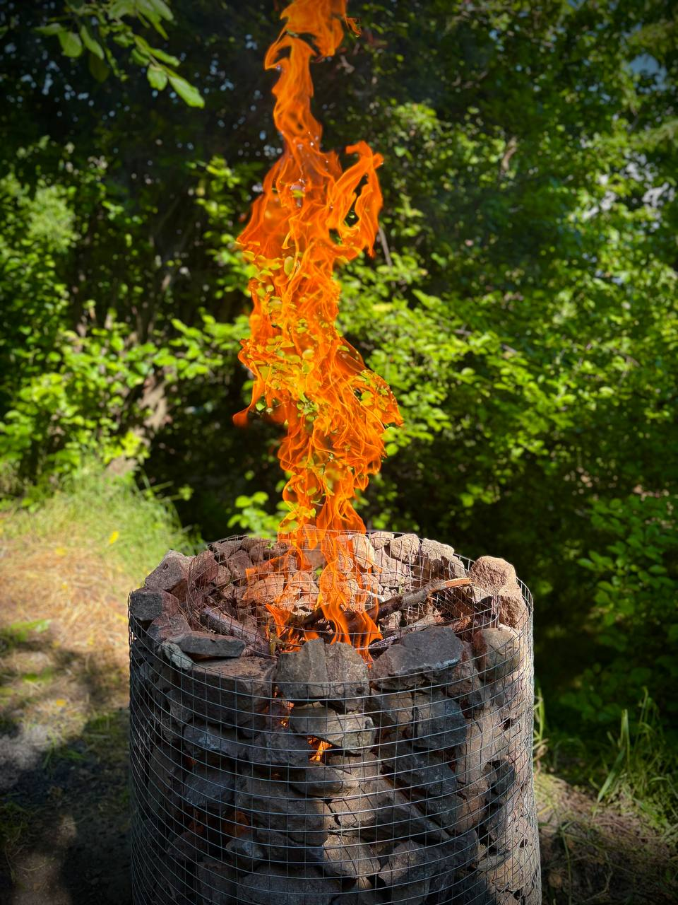
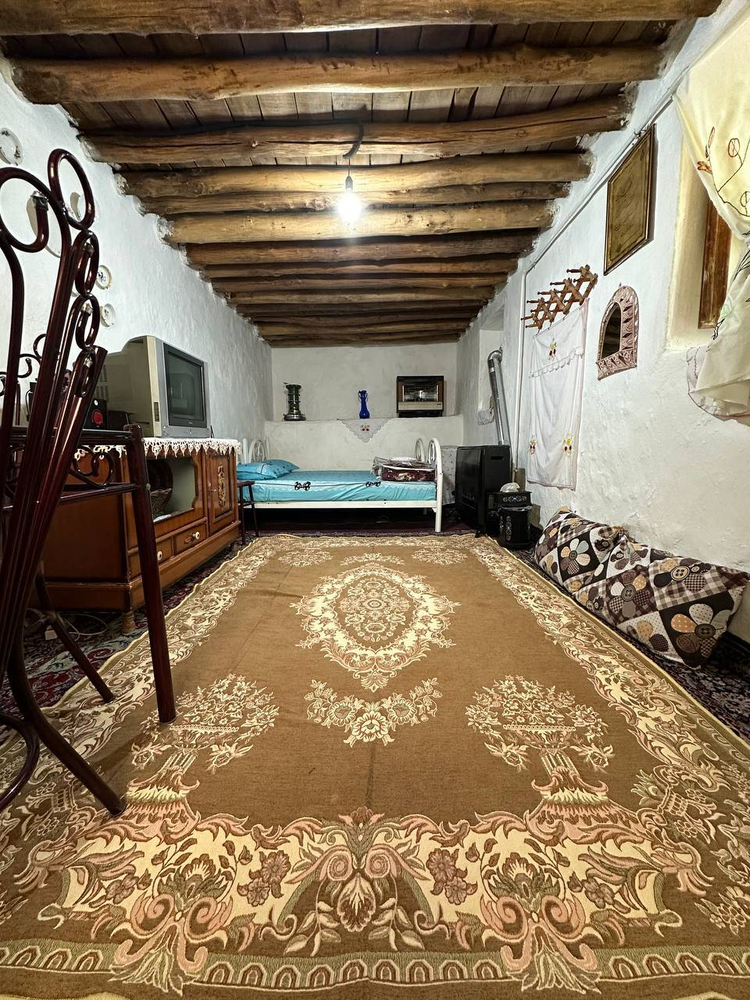
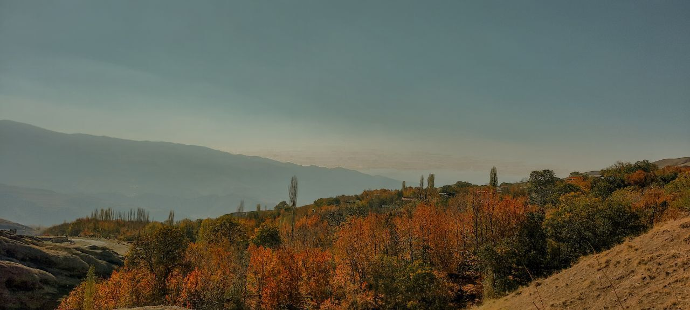
برای مسیریابی و مشاهده موقعیت دقیق اقامتگاه دِتَر میتوانید از لینکهای زیر استفاده کنید:
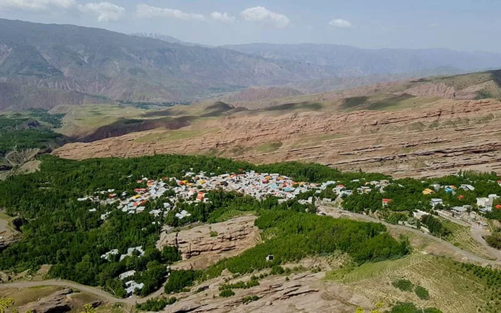
گازرخان در قلب منطقه الموت شرقی واقع شده و به دلیل طبیعت کوهستانی، باغهای میوه، هوای پاک و نزدیکی به قلعه الموت شهرت فراوانی دارد. این روستا یکی از مهمترین مقاصد گردشگری استان قزوین محسوب میشود.
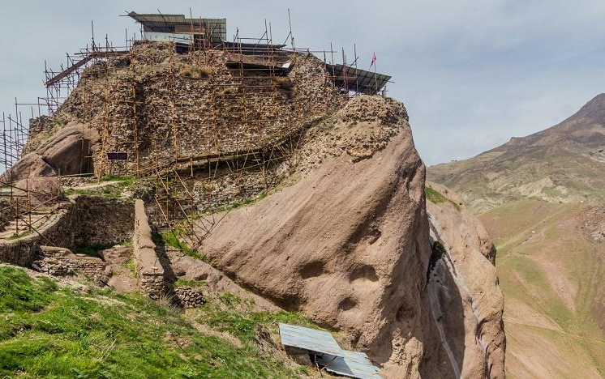
قلعه الموت که با نام قلعه حسن صباح نیز شناخته میشود، بر فراز صخرهای مرتفع ساخته شده و یکی از مشهورترین آثار تاریخی ایران است. این دژ در قرن پنجم هجری مرکز حکومت اسماعیلیان نزاری بوده است.
از بالای قلعه میتوان منظرهای شگفتانگیز از کوهستانهای البرز و درههای سرسبز الموت را مشاهده کرد.
📍 فاصله تا اقامتگاه دِتَر: ۵ دقیقه با خودرو
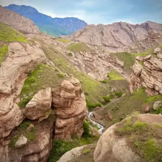
دره گرماگلو یکی از چشماندازهای طبیعی و کمتر شناختهشده منطقه الموت است. این دره با صخرههای مرتفع، پوشش گیاهی متنوع و هوای مطبوع، مقصدی جذاب برای طبیعتگردان و علاقهمندان به عکاسی محسوب میشود.
نزدیکی این دره به گازرخان باعث شده گردشگران بتوانند در یک برنامه کوتاه، هم از قلعه حسن صباح و هم از طبیعت بکر منطقه بازدید کنند.
📍 فاصله تا اقامتگاه دِتَر: حدود ۱۰ دقیقه با خودرو
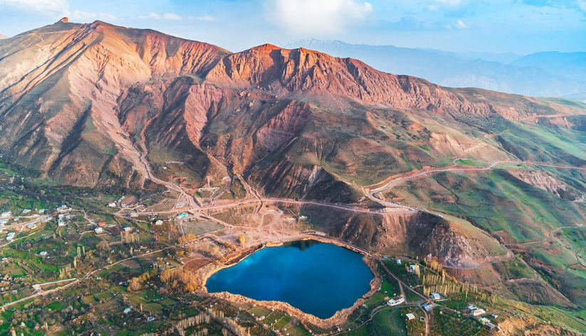
دریاچه اوان یکی از زیباترین دریاچههای طبیعی ایران است. این دریاچه در میان کوهها و دشتهای سرسبز قرار گرفته و در تمامی فصلهای سال چشماندازهای منحصربهفردی دارد.
قایقسواری، عکاسی طبیعت و پیادهروی از محبوبترین فعالیتهای گردشگران در این منطقه هستند.
📍 فاصله تا اقامتگاه دِتَر: حدود ۱ ساعت با خودرو
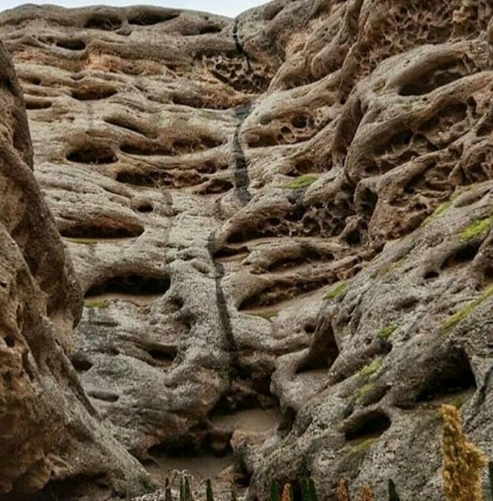
روستای اندج یکی از زیباترین روستاهای الموت است که به دلیل باغهای فراوان، رودخانههای دائمی و طبیعت کوهستانی شناخته میشود.
این روستا نقطه شروع بسیاری از مسیرهای کوهنوردی و طبیعتگردی منطقه است.
📍 فاصله تا اقامتگاه دِتَر: حدود ۳۰ دقیقه با خودرو
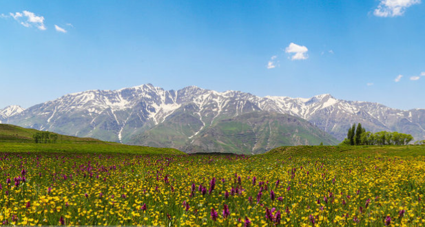
منطقه پیچ بن از جاذبههای کمتر شناختهشده اما بسیار زیبای الموت است. چشمانداز کوهستانی، دشتهای سرسبز و سکوت دلنشین این منطقه، آن را به مقصدی عالی برای علاقهمندان طبیعت تبدیل کرده است.
📍 فاصله تا اقامتگاه دِتَر: حدود ۱ ساعت با خودرو
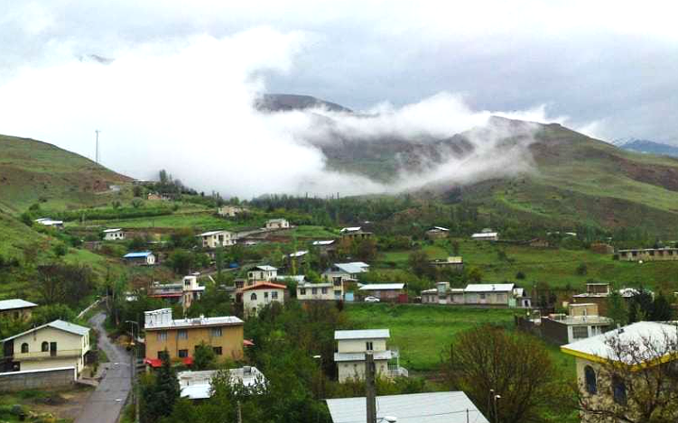
معلم کلایه نزدیکترین شهر منطقه به اقامتگاه دِتَر است و بسیاری از خدمات مورد نیاز گردشگران از جمله پمپ بنزین، فروشگاهها، داروخانه و خدمات بانکی در این شهر قرار دارد.
⛽ فاصله تا اقامتگاه دِتَر: حدود ۳۰ دقیقه با خودرو
📌 پیشنهاد دِتَر برای یک روز کامل در الموت
🌄 صبح ← پیکنیک در کنار صخرههای اندج
🍽 ظهر ← استراحت و صرف ناهار در اقامتگاه
🏰 بعد از ظهر ← بازدید از قلعه حسن صباح
اگر دوست دارید این مسیرها را از نزدیک تجربه کنید، اقامتگاه دِتَر آماده میزبانی شماست.
هر گوشه از الموت داستانی برای روایت دارد. بخشی از خاطرات ثبتشده مهمانان دِتَر را در اینجا مشاهده میکنید.
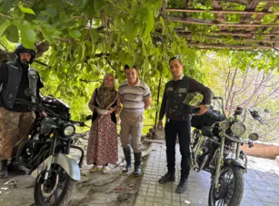
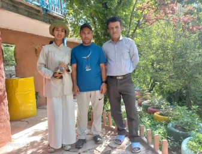
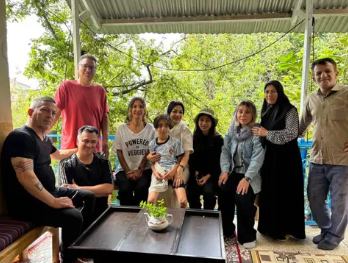
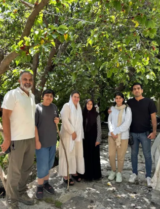
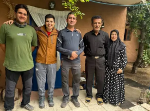
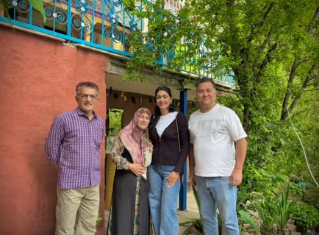
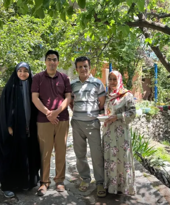
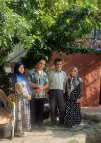
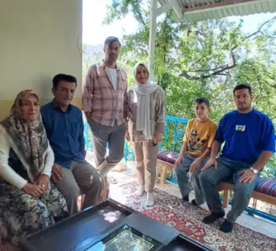
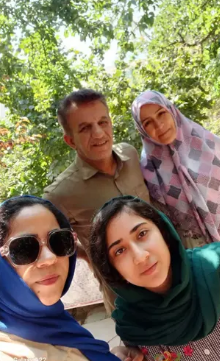
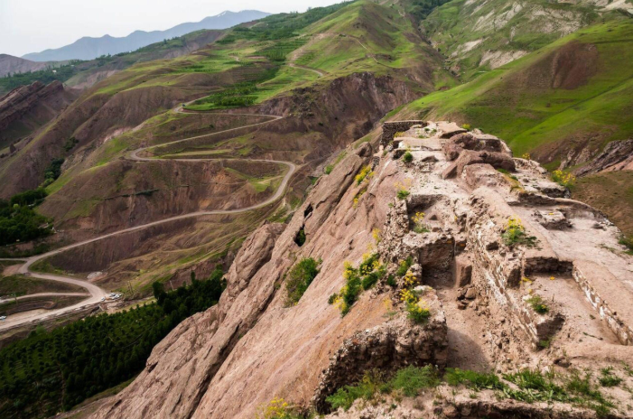
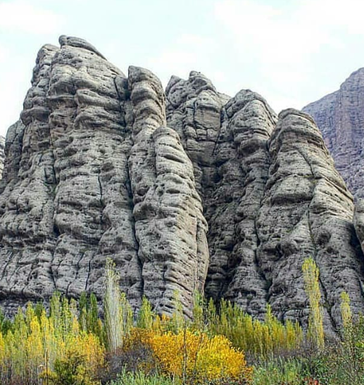
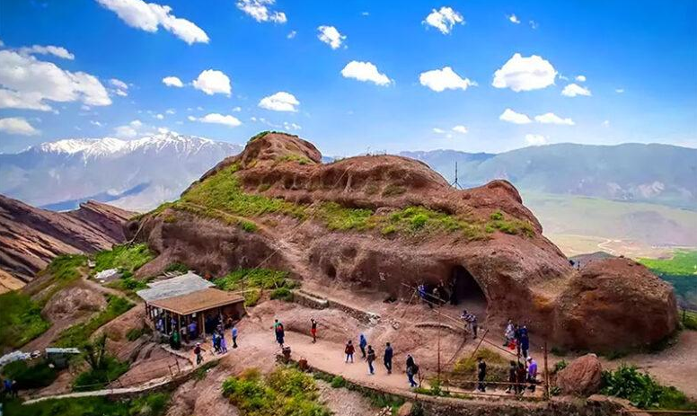
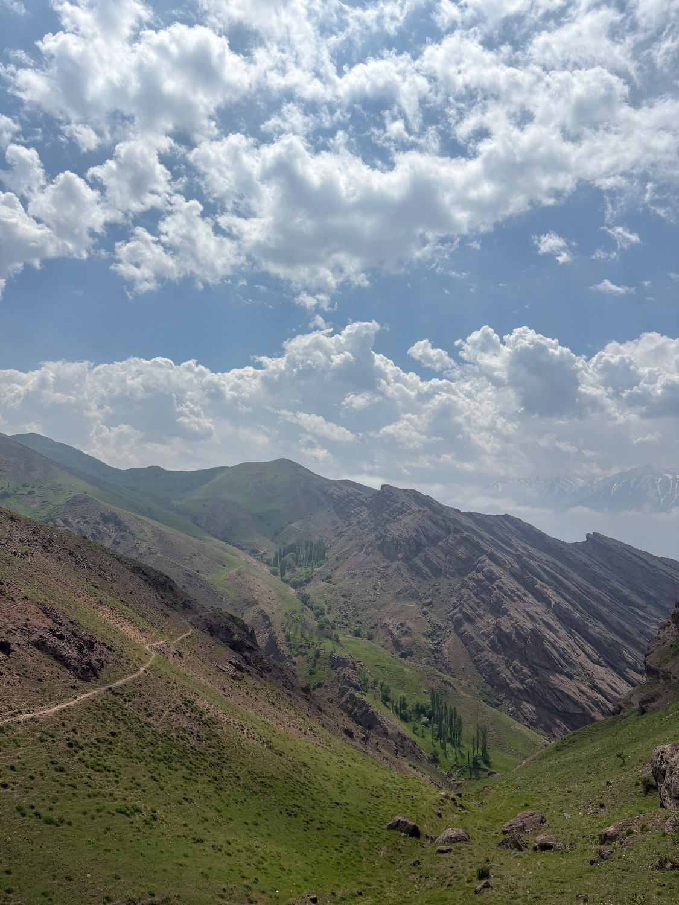
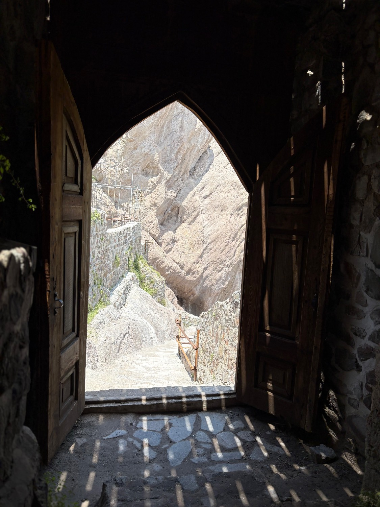
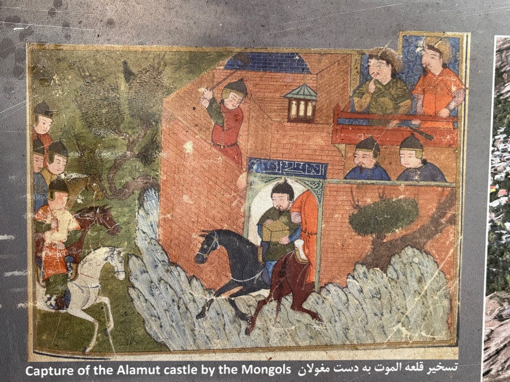
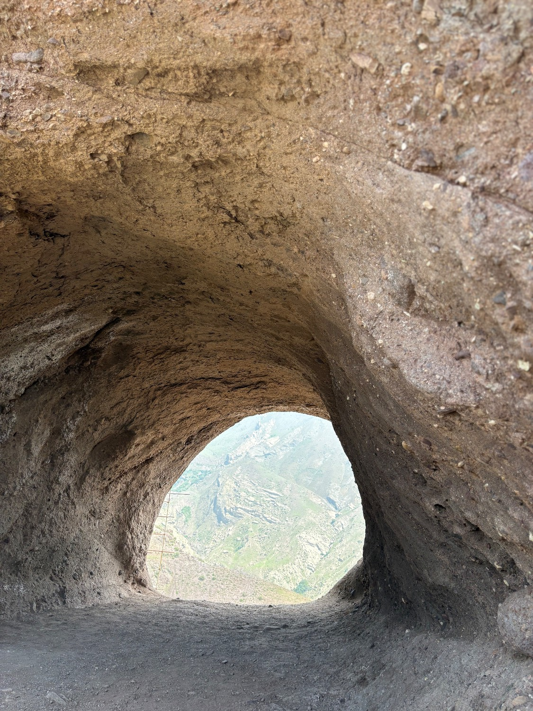
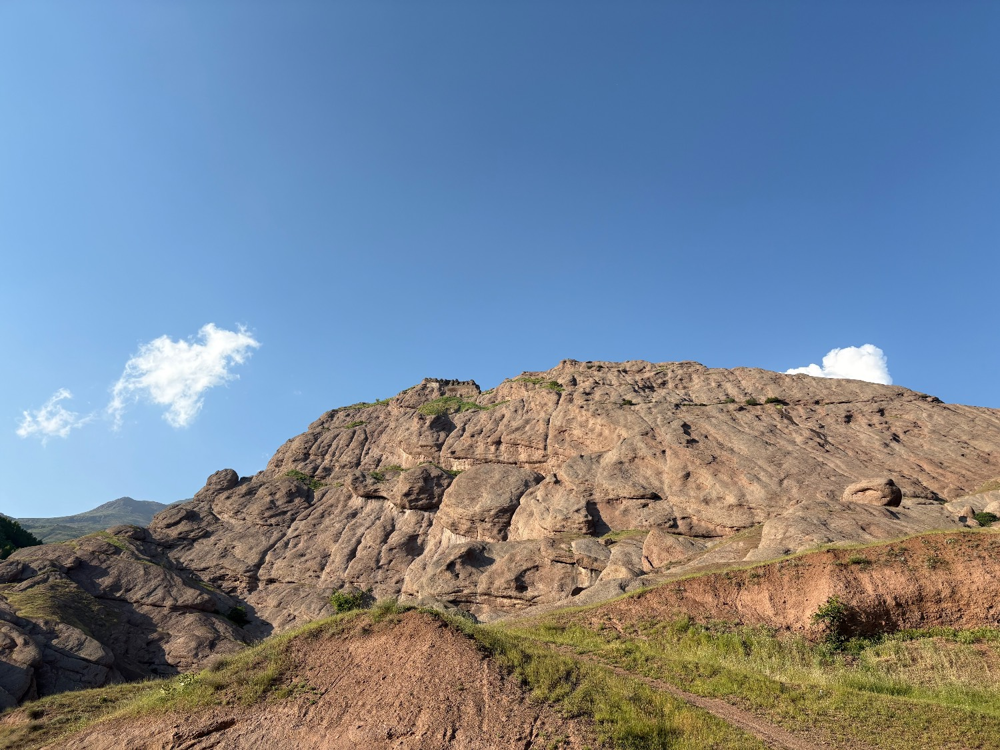
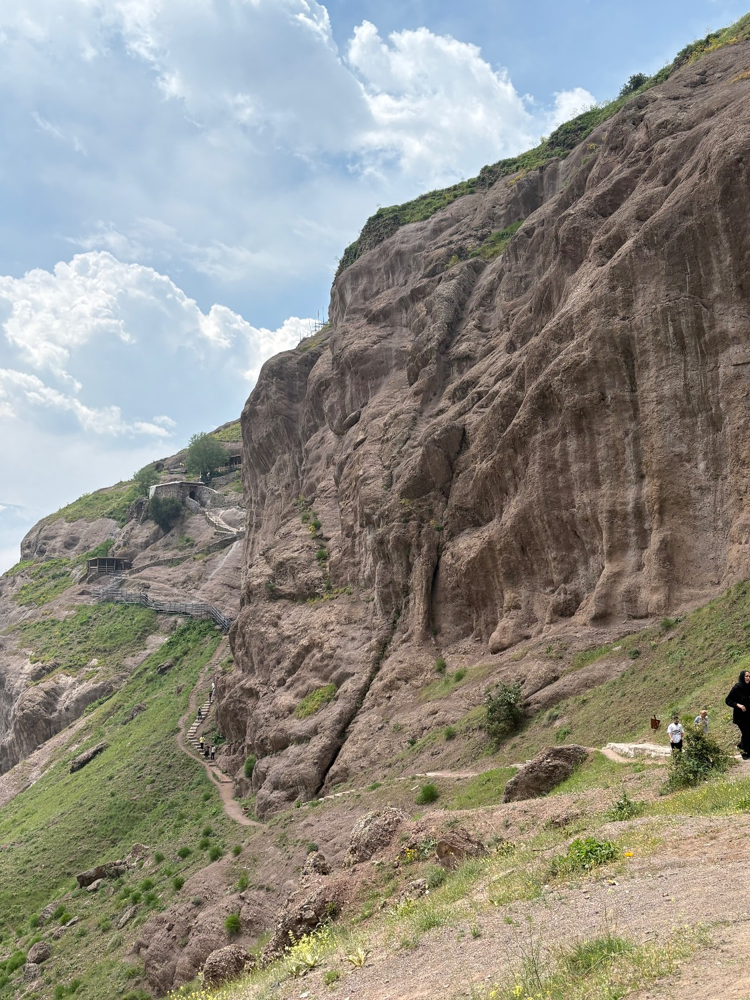